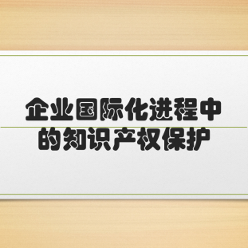
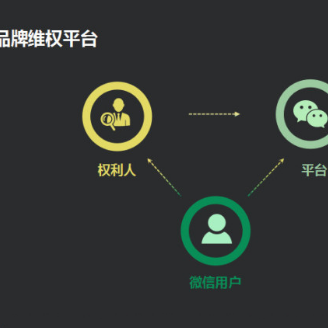

资讯动态
-

企业国际化进程中的知识产权保护
2018年6月5日，商业软件联盟（BSA）发布《2018年全球软件调查报告》，与2016年的BSA软件联盟全球软件调查结果相比，中国的盗版软件使用率降幅为4%，降至66%。
时间：2018-07-18 点击数：8726 -

微信品牌权利人保护大会在广州召开 品牌维权成效显著
2018年3月13日，腾讯公司微信团队在广州举办微信品牌权利人保护大会，发布《微信品牌权利人保护报告》及微信品牌维权平台的优化成果。
时间：2018-07-18 点击数：8726 -

Brent Irvin：中国版权保护及版权相关交易的演变
2017年12月4日，第6届北大-牛津-斯坦福互联网法律与公共政策研讨会在美国硅谷斯坦福大学成功举办。腾讯集团总法律顾问Brent Irvin参加会议并做了主题发言。
时间：2018-04-09 点击数：8726 -

腾讯公司副总裁、总法律顾问Brent Irvin：中国知识产权保护环境比很多人想象的好
2017年4月15日，由国家知识产权局指导，中南财经政法大学和上海应用技术大学联合主办的第十四届知识产权南湖论坛——“新发展理念与知识产权法治现代化”国际研讨会在上海召开。
时间：2017-06-12 点击数：8726 -

腾讯副总裁Brent Irvin：互联网创新与知识产权保护
12月17日，腾讯公司副总裁、总法律顾问Brent Irvin参加“第二届世界互联网大会——互联网创新论坛”，就互联网创新与知识产权发表主旨演讲，以下为演讲原文：
时间：2016-1-28 点击数：7744 -

腾讯江波：法律应与时俱进打击聚合盗链侵权
“侵权3.0时代，网络版权侵权进入网页、播放器、云存储全分离时代。”腾讯公司法务部总经理江波认为，判断网络版权侵权的标准应该与时俱进，适应时代和技术发展的现状，不应一味拘泥于“上传至服务器”的情节。
时间：2016-08-23 点击数：6257 -

微信品牌维权平台上线
谁都难免有个遇到假货的时候。但从现在开始，你要是在微信上遇到个卖假货的，你有地儿说理了！
时间：2015-07-29 点击数：7930 -

用法律和自律来遏制网络盗版
2015年4月18日至19日，由教育部重点人文社会科学研究基地、中南财经政法大学知识产权研究中心发起的"2015知识产权南湖论坛"：知识产权强国建设国际研讨会”将在南京隆重召开。
时间：2015-04-28 点击数：5273 -

微信公布首批售假账号处理结果
根据微信安全中心公布的品牌维权流程，我们处理了首批由路易·威登（Louis Vuitton）、阿迪达斯（Adidas）、厉峰（Richemont）投诉并举证为售假的帐号。
时间：2015-03-18 点击数：8192 -

微信公布品牌维权流程
微信并非交易平台，对售假行为没有判断定性的能力，打击售假行为，需要依赖用户提供线索，依赖商标权利人的验证来判断售假是否属实。
时间：2015-03-18 点击数：9102